AVATAR REVIEW · 177
Clothing for floating arms
Sleeves now cover the selected Swept arms. The T-shirt, jersey and button-up have short sleeves; the hoodie has longer sleeves and cuffs. Compare with 176 using Version.
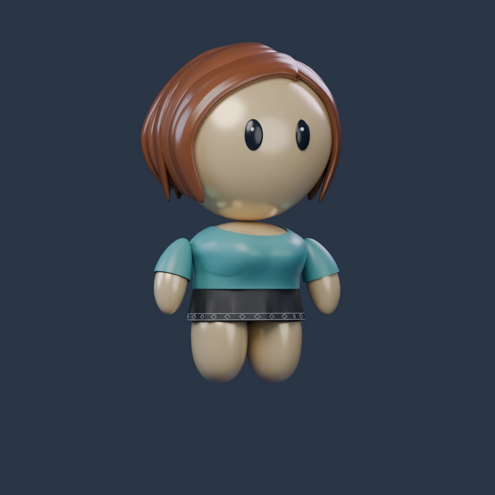
Blender render · T-shirt / Skirt / Light warmLoad 3D to mix outfits, rotate and zoom. Each build remembers its selections.
Blender renders are the appearance reference. Live 3D uses separate lighting and may differ in finish. Rendered outfits use Light warm skin and black Skirt (feminine) or Shorts (masculine). Load 3D for other palettes and combinations.
Feminine · before and updated
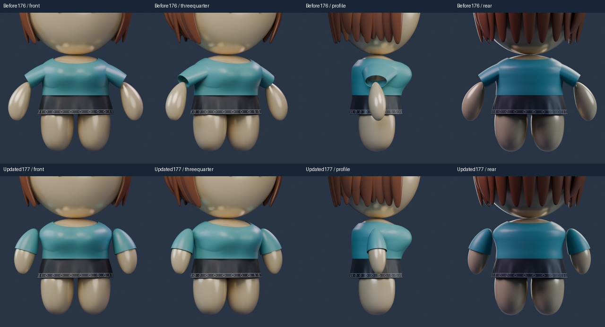
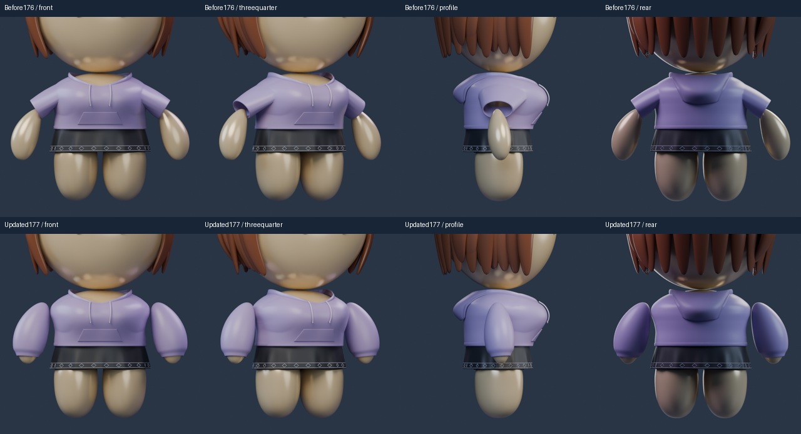
Masculine · before and updated
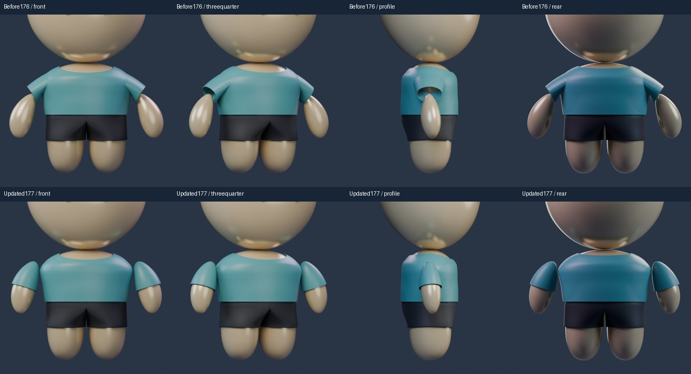
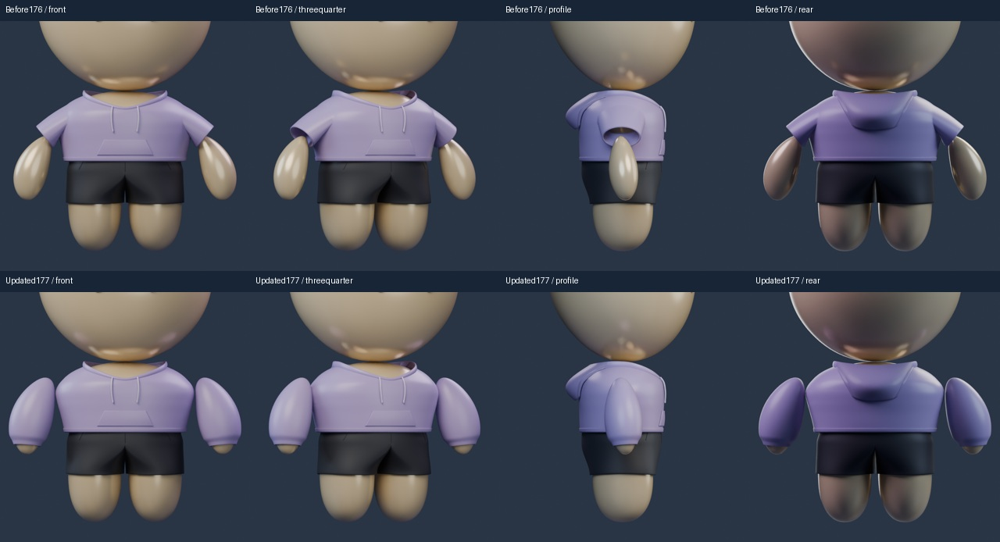
All 13 tops · front, side and back
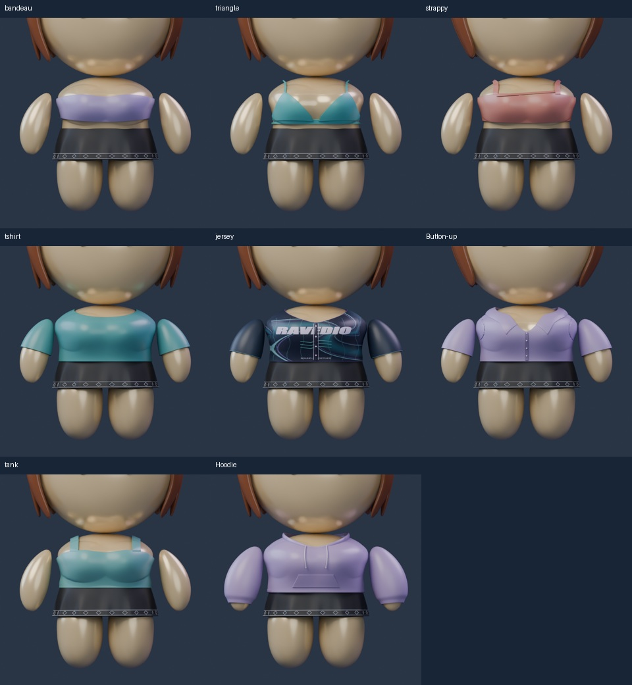
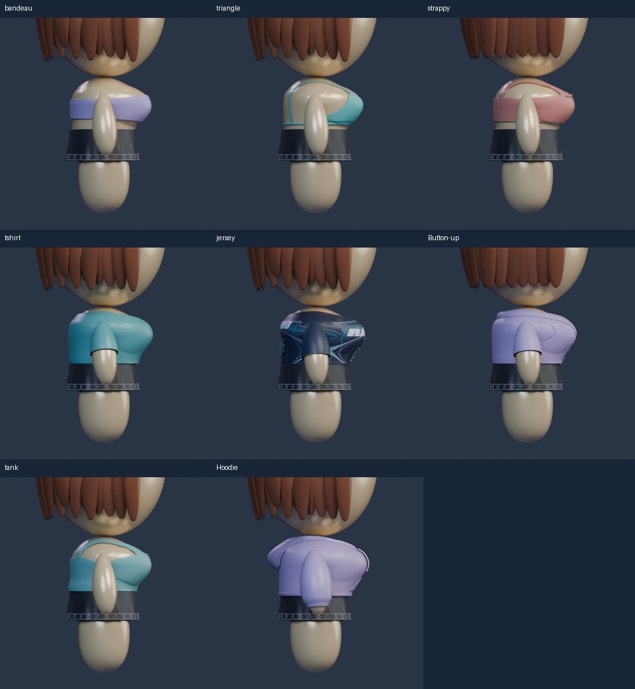
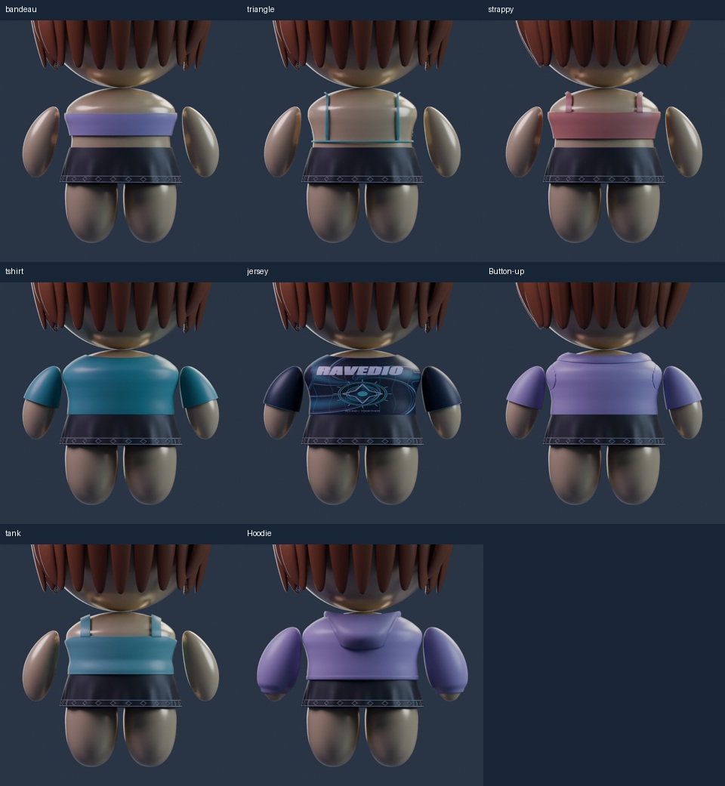
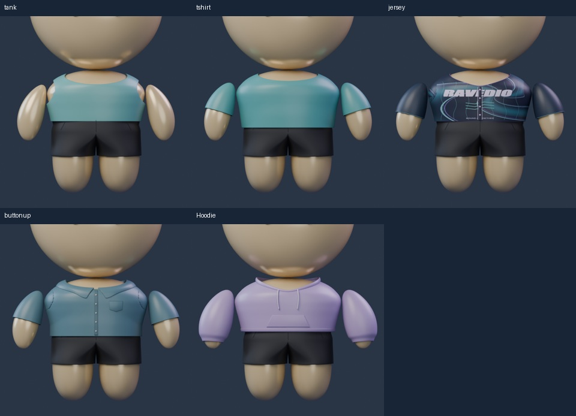
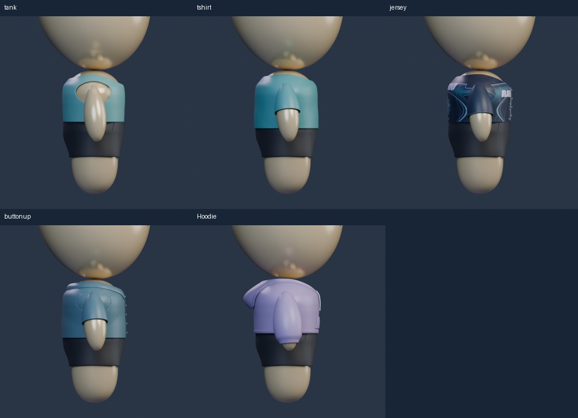
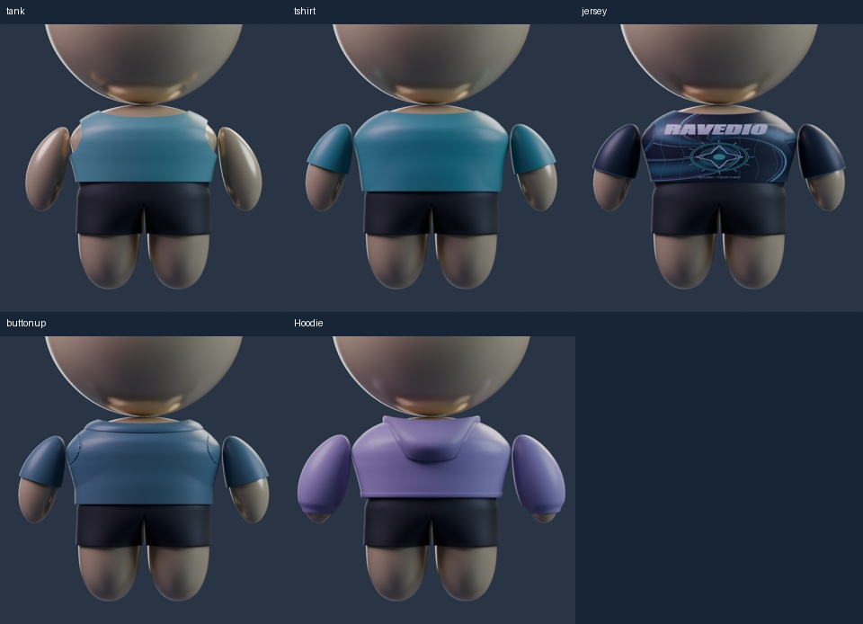
Six-angle outfit turnarounds
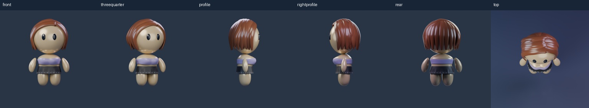
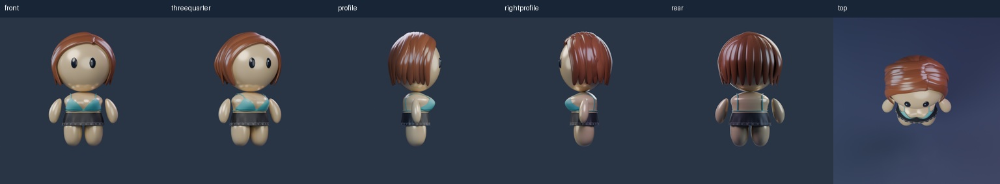
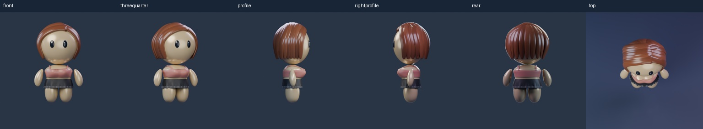
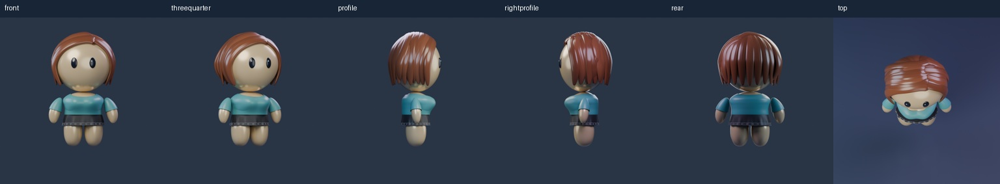
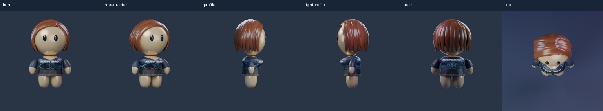
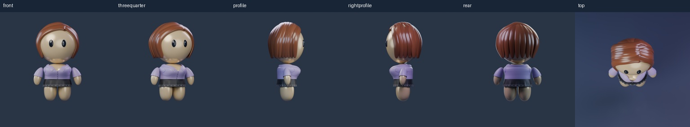
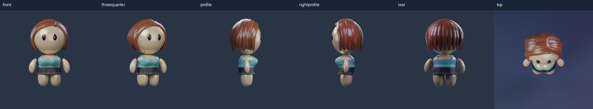
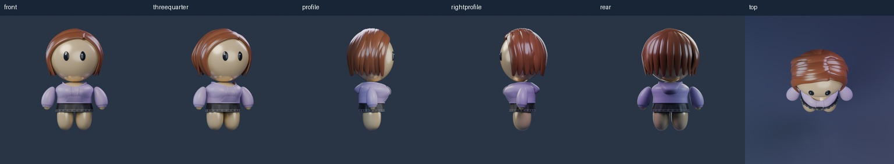
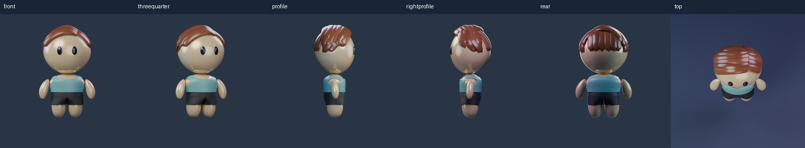
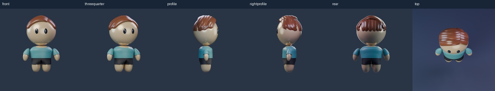
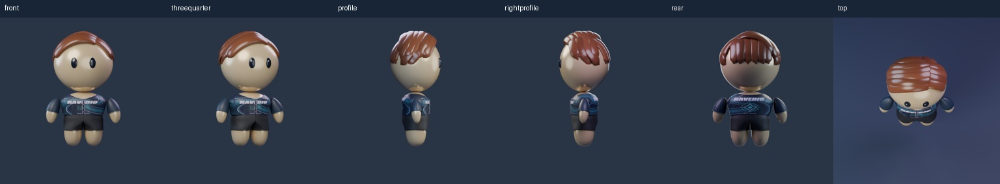
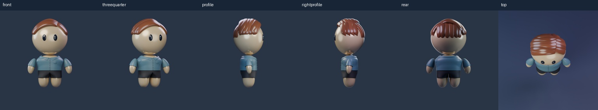
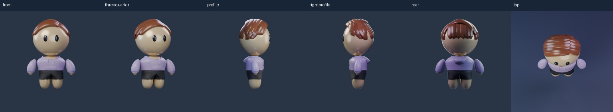
Files and review scope
Eight sleeved garments rebuilt on the selected floating arms. Five sleeveless garments checked with those arms. Face, body, hair, palettes and bottom choices retain their selected versions. Native save/reopen checks and two visual passes are recorded separately from owner approval, which remains pending.